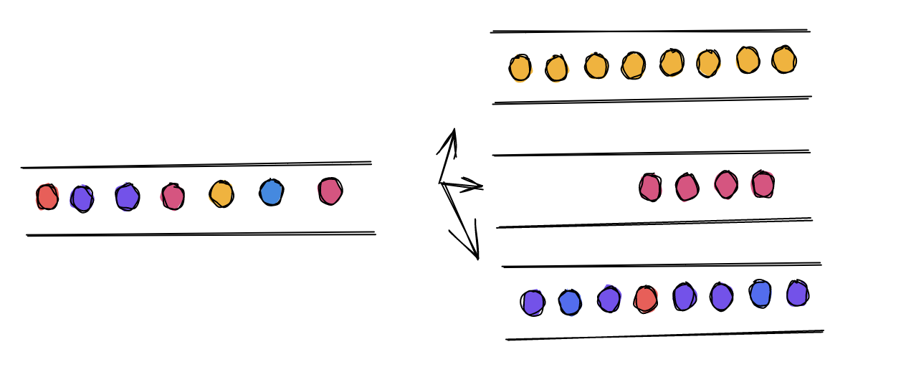

For the teacher

Info
For 2023 this tutorial is a presentation and not an activity. Please ignore the timing for each activity.
Recent controversy has brought attention to the monopoly held by certain ticketing companies. In hopes of an eventual collapse of the current monopoly, we aim to develop TicketOverflow, an online concert ticket booking system.
Task You are working for TicketOverflow, a new competitor in the online ticket booking space. TicketOverflow uses a microservices based architecture to implement their new platform. The CEO saw on your resume that you took Software Architecture and has assigned you to design and implement the ticket purchasing service. This service must be scalable to cope with a large influx of bookings.
You also need to implement a mock of the users service. This service is being implemented by another team at TicketOverflow. You need to implement a mock to allow your ticket purchasing service to be tested. Your mock of this service will use a hard-coded list of users.
Requirements As you may be aware, ticket booking platforms have intense peaks of traffic. At the scale that TicketOverflow hopes to operate, it would be inappropriate to run the servers required to meet demand at all times. Thus, our service must be elastic — able to scale up to meet demand and able to scale down to preserve costs.
Introduction to the brief and resources including the API specification and quality scenarios.
In small groups, begin a discussion, the discussion may include:
For the teacher
Q1, Q2, Q3 all introduce load to the system for ticket purchasing
Q4 introduces load on the concerts endpoint for every purchase
Q5 introduces that we need to handle load on the same endpoint for multiple entries and the printing of tickets at scale.
Q6 adds priorities to the mix for ticket printing
Q7 adds the need to cancel / alter async process that are in flight
Q8 introduces a large amount of load thats expected to push the system to the limit, so I should expect to crash and have to recover.
API specifies that concert seating must be updated within 3 minutes.
For the teacher
Ticket Rendering Looking at the hamilton documentation we have been given the expected runtime and memory usage to create an individual ticket. We can see that the process is CPU intensive and small on memory and takes a few seconds. We could possibly get away with running this sequently but with the CPU required we may want to offload.
+ Queue Ticket Rendering to offload processing
For the teacher
Ticket Priority Given the scenarios we can see that there is a significant amount of time between the two concerts so we could apply more novel approaches to the problem.
Create buckets of priority and assign jobs based on the concert time compared to todays date. 
Stage queued jobs into a table where a queue manager selectivly pulls jobs from the table based on priority. The queue manager would keep the queue fed with a small amount of jobs such that it is just enough for the workers.
+ Buckets for priority due to simplicity but the staging table is more versatile
For the teacher
Seating Rendering As above we see that seating requires more time due to CPU load but is relativly the same. We must proactivly render the seating to ensure that we can meet the 3 minute requirement. Some stratergies for this:
Render with every ticket purchase. Means we cant render tickets in parallel if they also render the seating.
Queue a render for every purchase.
Queue on an exclusive queue for every purchase. A queue that only allows 1 of every ID to be in the queue at a time.
Cron to render seating every minute if there are more tickets than last render.
The exclusive queue design would allow for seating to be updated as fast as possible while also reducing the resources required in large loads. On the other hand the cron job is a elegant design in simplicity while also meeting the expectations of the users.
+ Cron to queue rendering of seating
For the teacher
Printing Invalidation Depending on your queue implementation you may be able to cancel jobs that are in fly. Optionally by resetting the ticket status when our render job gets processed it can skip the printing step. To avoid race conditions we can use a lock on the concert when changes are being processed.
Other methods could be storing a version of a concert and when printing we also get the version of the concert. When requesting a printed ticket we can check the versions and if they do not match then we can invalidate the ticket.
+ Check ticket status during printing
For the teacher
Ticket Purchasing Purchasing a ticket requires making sure that we have not oversold the concert.
Count all tickets before selling a new one. This can potentially allow overselling if two requests are made at the same time.
Lock the concert when selling a ticket. This would cause a bottleneck on the concert endpoint.
Use a atomic counter to count the tickets for each concert.
Use multiple atomic counters to distribute waiting for a lock. By splitting the counters into buckets of tickets we can allow the client to random select a bucket which may have tickets available.
+ Use one or more atomic counters to count tickets
For the teacher
For the teacher
In your group, design an appropriate system. You need to consider the flow of an API request through your system, use the API specification to ensure all use cases have been considered.
For the teacher
In the remaining time, each group should present their proposed design. This is an opportunity for discussion amoungst the class to point out limitations of the proposed system designs.
Q1: Small concert As TicketOverflow is starting out, it will need to scale to the size of a small concert. Playhouse at QPAC is one of the first venues to sign up for the service. Their customers purchase tickets in advance over a longer period of time.
Q2: Pre-sale for Hamilton Hamilton is now showing at the Lyric Theatre at QPAC and the pre-sale tickets are released for a limited time. The tickets are in high demand, and there are a large number of customers trying to purchase tickets at the same time.
Q3: General sale for Hamilton The general sale for Hamilton has started, and there is a surge of customers trying to purchase tickets at the same time. This leads to a high traffic volume on the website, which puts a strain on TicketOverflow.
Q4: Seating plan launch The frontend team at TicketOverflow have developed a new ticket purchasing interface that shows users the seating plan before they purchase. A large concert is being used to trial this new feature. You need to ensure that the rendering of the seating plan does not interfere with the high volume of associated ticket purchases.
Q5: Evening shows at QPAC All QPAC venues are now supported in TicketOverflow. Each evening there are multiple concerts that run concurrently. TicketOverflow must be able to handle a steady stream of parallel purchases, ticket generation, and seating plan generation.
Q6: Priority tickets Tickets recently went on sale for a large concert in four months time. Some of the ticket purchasers are downloading their tickets in advance. Meanwhile an evening show for a smaller concert is starting in a few minutes. The evening show attendees should be able to download their tickets without being impacted by the later concert.
Q7: Copyright infringement Due to a copyright notice, “Elsa on Ice”, has to be renamed to “Bob on Ice”. Unfortunately, this is a last minute name change while many users are logging in to generate their tickets. Your system must ensure that they are not shown incorrect tickets and gracefully handles re-generation of tickets.
You are not required to queue up re-printing all the tickets that have already been printed. As indicated in the API specification for the update concert endpoint (/concerts/id PUT1), “any existing tickets that have been generated need to be removed.” This means that, for the concert which is updated, all tickets that have a PRINTED status must have that status changed to NOT_PRINTED. You need to ensure that tickets with a PENDING status cannot print tickets with outdated information. It is the client’s responsibility to determine that the ticket status has changed and to re-print the ticket. Your system has to manage the load.
Q8: Taylor Swift tour Taylor Swift has chosen TicketOverflow for the release of her Eras Tour. It is estimated that there will be about 2.8 million purchases during this time. Your service should do its best to remain responsive during the launch of the tour.